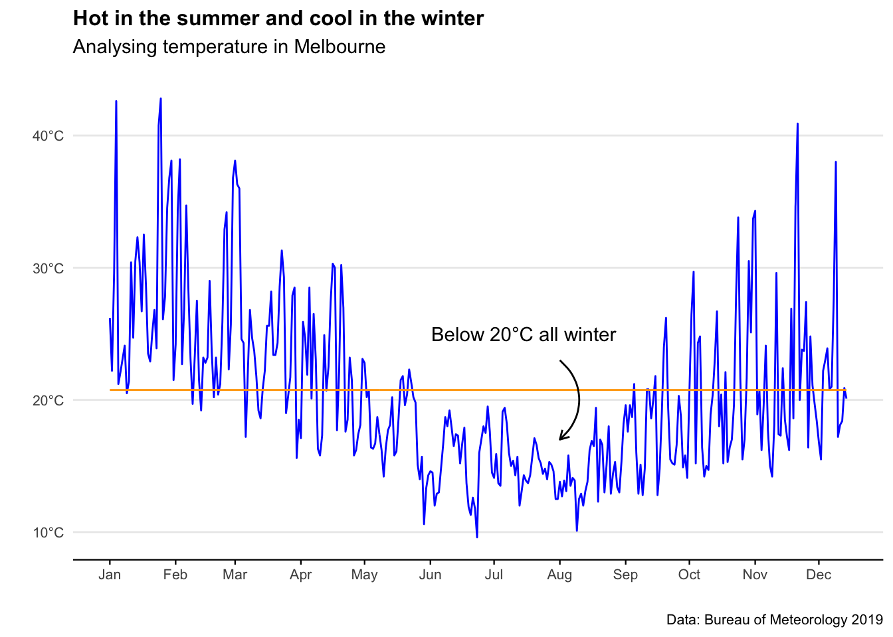
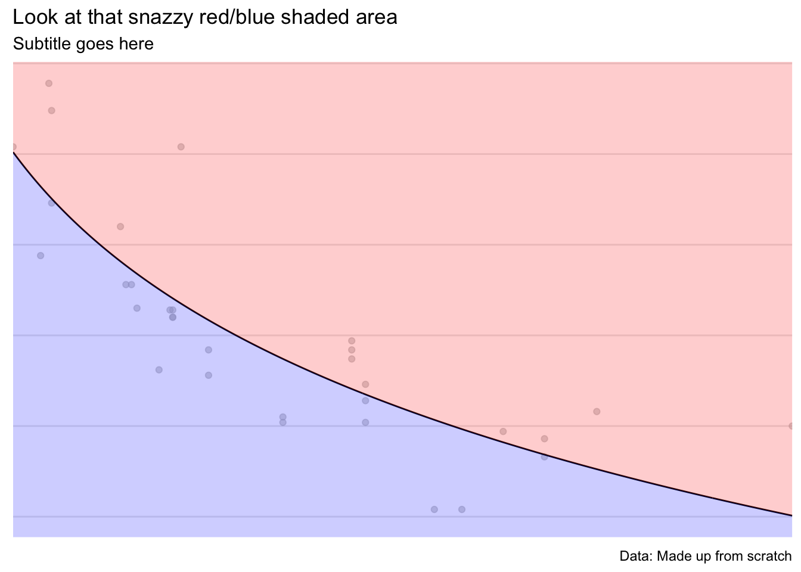
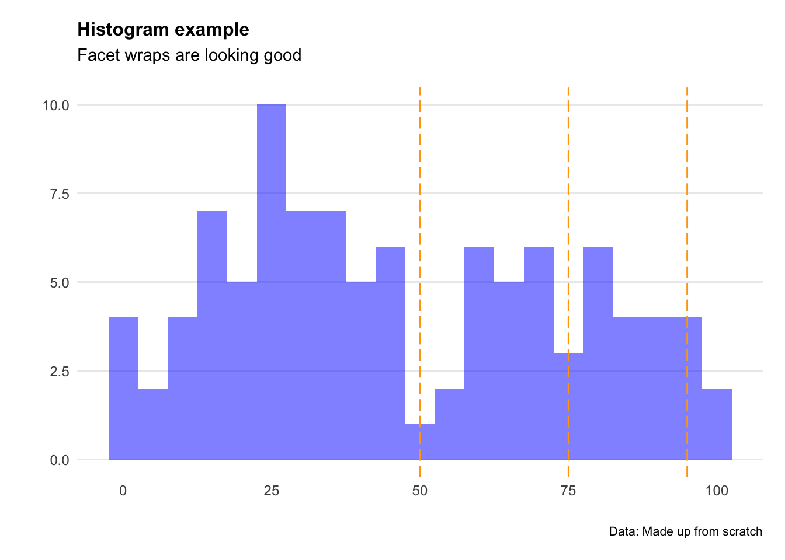

Chapter 3 Charts
3.1 Packages matter
There’s exceptional resources online for using the ggplot2 package and the broader tidyverse suite to create production ready charts.
The R Graph Gallery is a great place to start, as is the visual storytelling blogs of The Economist and the BBC.
This chapter contains the code for some of my most used charts and visualization techniques.
# Load core packages
library(tidyverse) # Includes ggplot2, dplyr, tidyr, purrr, and readr
library(lubridate)
library(readxl)
library(scales)
# Load additional visualization libraries
library(ggridges)
library(ggrepel)
library(viridis)
library(patchwork)
# Load additional data manipulation libraries
library(reshape2)
library(gapminder)3.2 Make the data tidy
Before making a chart ensure the data is “tidy” - meaning there is a new row for every changed variable. It also doesn’t hurt to remove NA’s for consistency (particularly in time series).
#Read in data
url <-"https://raw.githubusercontent.com/charlescoverdale/ggridges/master/2019_MEL_max_temp_daily.xlsx"
#Read in with read.xlsx
MEL_temp_daily <- openxlsx::read.xlsx(url)
#Remove last 2 characters to just be left with the day number
MEL_temp_daily$Day=substr(MEL_temp_daily$Day,1,nchar(MEL_temp_daily$Day)-2)
#Make a wide format long using the gather function
MEL_temp_daily <- MEL_temp_daily %>%
gather(Month,Temp,Jan:Dec)
MEL_temp_daily$Month<-factor(MEL_temp_daily$Month,levels=c("Jan", "Feb", "Mar", "Apr", "May", "Jun", "Jul", "Aug", "Sep", "Oct", "Nov", "Dec"))
#Add in a year
MEL_temp_daily["Year"]=2019
#Reorder
MEL_temp_daily <- MEL_temp_daily[,c(1,2,4,3)]
#Make a single data field using lubridate
MEL_temp_daily <- MEL_temp_daily %>% mutate(Date = make_date(Year, Month, Day))
#Drop the original date columns
MEL_temp_daily <- MEL_temp_daily %>% dplyr::select(Date, Temp) %>% drop_na()
#Add on a 7-day rolling average
MEL_temp_daily <- MEL_temp_daily %>% dplyr::mutate(Seven_day_rolling =
zoo::rollmean(Temp, k = 7, fill = NA),
Mean = mean(Temp))
#Drop NA's
#MEL_temp_daily <- MEL_temp_daily %>% drop_na()3.3 Line plot
plot_MEL_temp <- ggplot(MEL_temp_daily, aes(x = Date)) +
geom_line(aes(y = Temp), col = "blue") +
geom_line(aes(y = Mean), col = "orange") +
labs(
title = "Hot in the summer and cool in the winter",
subtitle = "Analysing temperature in Melbourne",
caption = "Data: Bureau of Meteorology 2019",
x = "",
y = ""
) +
scale_x_date(
date_breaks = "1 month",
date_labels = "%b",
limits = as.Date(c('2019-01-01', '2019-12-14'))
) +
scale_y_continuous(labels = unit_format(unit = "\u00b0C", sep = "")) +
theme_minimal() +
theme(
legend.position = "bottom",
plot.title = element_text(face = "bold", size = 12),
plot.subtitle = element_text(size = 11),
plot.caption = element_text(size = 8),
axis.text = element_text(size = 8),
panel.grid.minor = element_blank(),
panel.grid.major.x = element_blank(),
axis.line.x = element_line(colour = "black", size = 0.4),
axis.ticks.x = element_line(colour = "black", size = 0.4)
) +
annotate(
geom = "curve",
x = as.Date('2019-08-01'), y = 23,
xend = as.Date('2019-08-01'), yend = 17,
curvature = -0.5, arrow = arrow(length = unit(2, "mm"))
) +
annotate(
geom = "text",
x = as.Date('2019-07-15'), y = 25,
label = "Below 20°C all winter"
)
plot_MEL_temp
3.4 Scatter and trend plot
MEL_temp_Jan <- MEL_temp_daily %>% filter(Date < as.Date("2019-01-31"))
ggplot(MEL_temp_Jan, aes(x = Date, y = Temp)) +
geom_point(col = "purple", alpha = 0.4) +
geom_smooth(col = "purple", fill = "purple", alpha = 0.1, method = "lm") +
labs(
title = "January is a hot one",
subtitle = "Analysing temperature in Melbourne",
caption = "Data: Bureau of Meteorology 2019",
x = "",
y = "Temperature °C"
) +
scale_x_date(
date_breaks = "1 week",
date_labels = "%d-%b",
limits = as.Date(c('2019-01-01', '2019-01-31')),
expand = c(0, 0)
) +
geom_hline(yintercept = 45, colour = "black", size = 0.4) +
annotate(
geom = "curve",
x = as.Date('2019-01-22'), y = 37.5,
xend = as.Date('2019-01-25'), yend = 42,
curvature = 0.5,
col = "#575757",
arrow = arrow(length = unit(2, "mm"))
) +
annotate(
geom = "text",
x = as.Date('2019-01-16'), y = 37.5,
label = "January saw some extreme temperatures",
size = 3.2, col = "#575757"
) +
theme_minimal() +
theme(
plot.title = element_text(face = "bold", size = 12),
plot.subtitle = element_text(size = 11),
plot.caption = element_text(size = 8),
axis.text = element_text(size = 8),
axis.title.y = element_text(size = 9, margin = margin(r = 10)),
panel.grid.minor = element_blank(),
panel.grid.major.x = element_blank(),
axis.line.x = element_line(colour = "black", size = 0.4),
axis.ticks.x = element_line(colour = "black", size = 0.4)
)3.5 Shading areas on plots
Adding shading behind a plot area is simple using geom_rect.
Adding shading under a particular model line? A little trickier. See both example below.
# Example 1: Custom y-axis threshold shading
threshold <- 20
ggplot(mtcars, aes(x = hp, y = mpg)) +
geom_point() +
geom_hline(yintercept = threshold) +
# Shade areas below and above threshold
geom_rect(xmin = -Inf, xmax = Inf, ymin = -Inf, ymax = threshold,
fill = "blue", alpha = 0.2) +
geom_rect(xmin = -Inf, xmax = Inf, ymin = threshold, ymax = Inf,
fill = "red", alpha = 0.2)# Example 2: Model line with shaded areas
model <- lm(mpg ~ log(hp), data = mtcars)
# Generate predicted values for plotting
df_line <- data.frame(hp = seq(min(mtcars$hp), max(mtcars$hp), by = 1))
df_line$mpg <- predict(model, newdata = df_line)
# Define polygons above and below the model line
df_poly_under <- bind_rows(df_line, tibble(hp = c(max(df_line$hp), min(df_line$hp)), mpg = c(-Inf, -Inf)))
df_poly_above <- bind_rows(df_line, tibble(hp = c(max(df_line$hp), min(df_line$hp)), mpg = c(Inf, Inf)))
# Plot the data, model line, and shaded areas
ggplot(mtcars, aes(x = hp, y = mpg)) +
geom_point(color = "grey", alpha = 0.5) +
geom_line(data = df_line, aes(x = hp, y = mpg), color = "black") +
# Shaded areas
geom_polygon(data = df_poly_under, aes(x = hp, y = mpg), fill = "blue", alpha = 0.2) +
geom_polygon(data = df_poly_above, aes(x = hp, y = mpg), fill = "red", alpha = 0.2) +
scale_x_continuous(expand = c(0, 0)) +
labs(
title = "Look at that snazzy red/blue shaded area",
subtitle = "Subtitle goes here",
caption = "Data: Made up from scratch",
x = "",
y = ""
) +
theme_minimal() +
theme(
panel.grid.minor = element_blank(),
panel.grid.major.x = element_blank(),
axis.title = element_blank(),
axis.text = element_blank(),
axis.ticks = element_blank()
)
3.6 Bar chart
# Create data frame directly
bar_data_single <- data.frame(
Year = c("2018", "2019", "2020", "2021"),
Value = c(1000000, 3000000, 2000000, 5000000)
)
ggplot(bar_data_single, aes(x = Year, y = Value)) +
geom_bar(stat = "identity", fill = "blue", width = 0.8) +
# Labels in the middle of the bars
geom_text(aes(y = Value / 2, label = scales::dollar(Value, scale = 1/1e6, suffix = "m")),
size = 5, color = "white", fontface = "bold") +
labs(
title = "Bar chart example",
subtitle = "Subtitle goes here",
caption = "Data: Made up from scratch",
x = "",
y = ""
) +
theme_minimal() +
theme(
plot.title = element_text(face = "bold", size = 12),
plot.subtitle = element_text(size = 11),
plot.caption = element_text(size = 12),
axis.text = element_text(size = 12),
panel.grid.minor = element_blank(),
panel.grid.major = element_blank(),
axis.title.y = element_blank(),
axis.text.y = element_blank(),
axis.ticks.y = element_blank()
)3.7 Stacked bar chart
Year = c("2019", "2019", "2019", "2019", "2020", "2020", "2020", "2020")
Quarter = c("Q1","Q2","Q3", "Q4","Q1","Q2","Q3", "Q4")
Value = (c(100,300,200,500,400,700,200,300))
bar_data <- (cbind(Year, Quarter, Value))
bar_data <- as.data.frame(bar_data)
bar_data$Value = as.integer(bar_data$Value)
bar_data_totals <- bar_data %>%
dplyr::group_by(Year) %>%
dplyr:: summarise(Total = sum(Value))
ggplot(bar_data, aes(x = Year, y = Value, fill = (Quarter), label=Value)) +
geom_bar(position = position_stack(reverse=TRUE),stat='identity')+
geom_text(size = 4,
col="white",
fontface="bold",
position = position_stack(reverse=TRUE,vjust = 0.5),
label=scales::dollar(Value))+
geom_text(aes(Year, Total,
label=scales::dollar(Total),
fill = NULL,
vjust=-0.5),
fontface="bold",
size=4,
data = bar_data_totals)+
scale_fill_brewer(palette = "Blues") +
labs(title="Bar chart example",
subtitle = "Subtitle goes here",
caption = "Data: Made up from scratch",
x="",
y="Units") +
theme_minimal() +
theme(legend.position = "bottom")+
theme(legend.title = element_blank())+
theme(plot.title=element_text(face="bold",size=12))+
theme(plot.subtitle=element_text(size=10))+
theme(plot.caption=element_text(size=8))+
theme(axis.text=element_text(size=10))+
theme(panel.grid.minor = element_blank())+
theme(panel.grid.major.x = element_blank())+
theme(panel.grid.major.y = element_blank()) +
scale_y_continuous(expand=c(0,0),limits=c(0,1800))+
theme(axis.title.y=element_blank(),
axis.text.y=element_blank(),
axis.ticks.y=element_blank())3.8 Histogram
Aka. a bar chart for a continuous variable where the bars are touching. Useful to show distribution of time series or ordinal variables.
## [1] "0-20" "20-40" "40-60" "60-80" "80+"#Create a data set
hist_data <- data.frame(X1=sample(0:100,100,rep=TRUE))
ggplot(hist_data)+
geom_histogram(aes(x=X1),binwidth=5,fill="blue",alpha=0.5) +
geom_vline(xintercept=c(50,75,95),yintercept=0,linetype="longdash",col="orange") +
labs(title="Histogram example",
subtitle = "Facet wraps are looking good",
caption = "Data: Made up from scratch",
x="",
y="") +
theme_minimal() +
theme(panel.spacing.x = unit(10, "mm"))+
theme(legend.position="none")+
theme(plot.title=element_text(face="bold",size=12))+
theme(plot.subtitle=element_text(size=11))+
theme(plot.caption=element_text(size=8))+
theme(axis.text=element_text(size=9))+
theme(panel.grid.minor = element_blank())+
theme(panel.grid.major.x = element_blank()) +
theme(plot.subtitle = element_text(margin=margin(0,0,15,0))) +
theme(plot.margin=unit(c(0.5,0.5,0.5,0.5),"cm"))
3.9 Ridge chart
Handy when working with climate variables. Particularly useful at showing the difference in range of multiples series (e.g. temperature by month).
# Import data
url <-"https://raw.githubusercontent.com/charlescoverdale/ggridges/master/2019_MEL_max_temp_daily.xlsx"
MEL_temp_daily <- openxlsx::read.xlsx(url)
# Remove last 2 characters to just be left with the day number
MEL_temp_daily$Day=substr(MEL_temp_daily$Day,1,nchar(MEL_temp_daily$Day)-2)
# Make a wide format long using the gather function
MEL_temp_daily <- MEL_temp_daily %>%
gather(Month,Temp,Jan:Dec)
MEL_temp_daily$Month<-factor(MEL_temp_daily$Month,levels=c("Jan", "Feb", "Mar", "Apr", "May", "Jun", "Jul", "Aug", "Sep", "Oct", "Nov", "Dec"))
# Plot
ggplot(MEL_temp_daily,
aes(x = Temp, y = Month, fill = stat(x))) +
geom_density_ridges_gradient(scale =2,
size=0.3,
rel_min_height = 0.01,
gradient_lwd = 1.) +
scale_y_discrete(limits = unique(rev(MEL_temp_daily$Month)))+
scale_fill_viridis_c(name = "°C", option = "C") +
labs(title = 'Melbourne temperature profile',
subtitle = 'Daily maximum temperature recorded in Melbourne in 2019',
caption = "Data: Bureau of Meteorology 2020") +
xlab(" ")+
ylab(" ")+
theme_ridges(font_size = 13, grid = TRUE) 3.10 BBC style: Bar charts (categorical)
#devtools::install_github('bbc/bbplot')
library(gapminder)
library(bbplot)
# Prepare data
bar_df <- gapminder %>%
filter(year == 2007 & continent == "Africa") %>%
arrange(desc(lifeExp)) %>%
head(5)
# Make plot
bars <- ggplot(bar_df, aes(x = reorder(country, lifeExp), y = lifeExp, fill = country == "Mauritius")) +
geom_bar(stat="identity", position="identity") +
geom_hline(yintercept = 0, size = 1, colour="#333333") +
scale_fill_manual(values = c("TRUE" = "#1380A1", "FALSE" = "#dddddd")) +
labs(title = "Mauritius has the highest life expectancy",
subtitle = "Top 5 African countries by life expectancy, 2007") +
coord_flip() +
theme_minimal() +
theme(panel.grid.major.x = element_line(color="#cbcbcb"),
panel.grid.major.y = element_blank(),
legend.position = "none")
# Add labels
labelled_bars <- bars +
geom_label(aes(label = round(lifeExp, 0)),
hjust = 1, vjust = 0.5, colour = "white",
fill = "black", label.size = 0.2,
family = "Helvetica", size = 6)
labelled_bars3.11 BBC style: Dumbbell charts
Dumbbell charts are handy instead of using clustered column charts with janky thinkcell labels and arrows to show the difference between the columns. Note it relies on having a 4 variable input (variable_name, value1, value2, and gap).
The geom_dumbellfunction lives inside the ggalt package rather than the standard ggplot2.
library(ggalt) # For geom_dumbbell
library(gapminder)
library(bbplot) # Uncomment if using bbc_style()
# Prepare data
dumbbell_df <- gapminder %>%
filter(year %in% c(1967, 2007)) %>%
select(country, year, lifeExp) %>%
pivot_wider(names_from = year, values_from = lifeExp) %>%
mutate(gap = `2007` - `1967`) %>%
arrange(desc(gap)) %>%
head(10)
# Make plot
ggplot(dumbbell_df, aes(x = `1967`, xend = `2007`, y = reorder(country, gap), group = country)) +
geom_dumbbell(colour = "#dddddd",
size = 3,
colour_x = "#FAAB18",
colour_xend = "#1380A1") +
labs(title = "We're Living Longer",
subtitle = "Top 10 biggest increases in life expectancy (1967-2007)") +
theme_minimal() +
theme(panel.grid.major.y = element_blank(),
panel.grid.minor = element_blank())3.12 Facet wraps
Handy rather than showing multiple lines on the same chart.
Top tips: facet_wrap()dataframes need to be in long form in order to be manipulated easily.
It also helps to add on separate columns for the start and end values (if you want to add data point labels).
#Create a data set
Year = c("2018", "2019", "2020", "2021")
QLD = (c(500,300, 500, 600))
NSW = (c(200,400, 500, 700))
VIC = (c(300,400, 500, 600))
#Combine the columns into a single dataframe
facet_data <- (cbind(Year, QLD,NSW,VIC))
facet_data <- as.data.frame(facet_data)
#Change formats to integers
facet_data$QLD = as.integer(facet_data$QLD)
facet_data$NSW = as.integer(facet_data$NSW)
facet_data$VIC = as.integer(facet_data$VIC)
#Make the wide data long
facet_data_long <- pivot_longer(facet_data,!Year, names_to="State", values_to="Value")
facet_data_long <- facet_data_long %>%
dplyr::mutate(start_label =
if_else(Year == min(Year),
as.integer(Value), NA_integer_))
facet_data_long <- facet_data_long %>%
dplyr::mutate(end_label =
if_else(Year == max(Year),
as.integer(Value), NA_integer_))
#Make the base line chart
base_chart <- ggplot() +
geom_line(data=facet_data_long,
aes(x = Year,
y = Value,
group = State,
colour = State)) +
geom_point(data=facet_data_long,
aes(x = Year,
y = Value,
group = State,
colour = State)) +
ggrepel::geom_text_repel(data=facet_data_long,
aes(x = Year,
y = Value,
label = end_label),
color = "black",
nudge_y = -10,size=3) +
ggrepel::geom_text_repel(data=facet_data_long,
aes(x = Year,
y = Value,
label = start_label),
color = "black",
nudge_y = 10,size=3)
base_chart +
scale_x_discrete(
breaks = seq(2018, 2021, 1),
labels = c("2018", "19", "20", "21"))+
facet_wrap(State ~ .) +
#To control the grid arrangement, we can add in customer dimensions
#ncol = 2, nrow=2) +
labs(title="State by state comparison",
subtitle = "Facet wraps are looking good",
caption = "Data: Made up from scratch",
x="",
y="") +
theme_minimal() +
theme(strip.text.x = element_text(size = 9, face = "bold")) +
theme(panel.spacing.x = unit(10, "mm"))+
theme(legend.position="none")+
theme(plot.title=element_text(face="bold",size=12))+
theme(plot.subtitle=element_text(size=11))+
theme(plot.caption=element_text(size=8))+
theme(axis.text=element_text(size=9))+
theme(panel.grid.minor = element_blank())+
theme(panel.grid.major.x = element_blank()) +
theme(plot.subtitle = element_text(margin=margin(0,0,15,0))) +
theme(plot.margin=unit(c(0.5,0.5,0.5,0.5),"cm"))3.13 Pie chart
These should be used sparingly… but they are handy for showing proportions when the proportion of the whole is paramount (e.g. 45%) - rather than the proportion in relation to another data point (e.g. 16% one year vs 18% the next).
# Create Data
pie_data <- data.frame(
group=LETTERS[1:5],
value=c(13,7,9,21,2))
# Compute the position of labels
pie_data <- pie_data %>%
arrange(desc(group)) %>%
mutate(proportion = value / sum(pie_data$value) *100) %>%
mutate(ypos = cumsum(proportion)- 0.5*proportion )
# Basic piechart
ggplot(pie_data, aes(x="", y=proportion, fill=group)) +
geom_bar(stat="identity")+
coord_polar("y", start=0) +
theme_void()+
geom_text(aes(y = ypos,
label = paste(round(proportion,digits=0),"%", sep = ""),x=1.25),
color = "white",
size=4) +
scale_fill_brewer(palette="Set1")+
labs(title="Use pie charts sparingly",
subtitle = "Subtitle goes here",
caption = "",
x="",
y="") +
theme(legend.position = "bottom")+
theme(legend.title = element_blank())+
theme(plot.title=element_text(face="bold",size=12))+
theme(plot.subtitle=element_text(size=11))+
theme(plot.caption=element_text(size=8))+
theme(plot.subtitle = element_text(margin=margin(0,0,5,0))) +
theme(plot.margin=unit(c(0.5,0.5,0.5,0.5),"cm"))3.14 Patchwork
Patchwork is a nifty package for arranging plots and other graphic elements (text, tables etc) in different grid arrangements. The basic syntax is to use plot1 | plot2 for side by side charts, and plot1 / plot2for top and bottom charts. You can also combine these two functions for a grid of different size columns (e.g. plot3 / (plot1 | plot2)
3.15 Saving to powerpoint
There’s a bunch of ways to save ggplot graphics - but the way I find most useful is by exporting to pptx in a common ‘charts’ directory.
If you want to save as a png you can use the normal ggsave function - however it will not be editable (e.g. able to click and drag to rescale for a presentation).
Therefore instead we can use the grattantheme package to easily save to an editable pptx graphic.
Note: The code below has been commented out so that is will upload to bookdown.org without an error.
#The classic save function to png
# ggsave(plot = ggplot2::last_plot(),
# width = 8,
# height = 12,
# dpi = 600,
# filename = "/Users/charlescoverdale/Desktop/test.png")
#Using the grattantheme package to easily safe to powerpoint
# grattan_save_pptx(p = ggplot2::last_plot(),
# "/Users/charlescoverdale/Desktop/test.pptx",
# type = "wholecolumn")3.16 Automating chart creation
Let’s say we have a dataframe of multiple variables. We want to produce simple charts of the same style for each variable (including formatting and titles etc). Sure we can change the aes(x=)and aes(y=) variables in ggplot2 manually for each column - but this is time intensive especially for large data frames. Instead, we can write a function that will loop through the whole dataframe and produce the same format of chart.
#Create a data set
Year = c("2018", "2019", "2020", "2021")
Variable1 = (c(500,300, 200, 400))
Variable2 = (c(200,400, 200, 700))
Variable3 = (c(300,500, 800, 1000))
#Combine the columns into a single dataframe
bar_data_multiple <- (cbind(Year, Variable1, Variable2, Variable3))
bar_data_multiple <- as.data.frame(bar_data_multiple)
#Change formats to integers
bar_data_multiple$Variable1 = as.integer(bar_data_multiple$Variable1)
bar_data_multiple$Variable2 = as.integer(bar_data_multiple$Variable2)
bar_data_multiple$Variable3 = as.integer(bar_data_multiple$Variable3)
#Define a function
loop <- function(chart_variable) {
ggplot(bar_data_multiple, aes(x = Year,
y = .data[[chart_variable]],
label = .data[[chart_variable]]))+
geom_bar(stat='identity',fill="blue")+
geom_text(aes(
label = scales::dollar(.data[[chart_variable]])),
size = 5,
col="white",
fontface="bold",
position = position_stack(vjust = 0.5))+
labs(title=paste("Company X: ",
chart_variable,
" (",head(Year,n=1),
" - ",
tail(Year,n=1),
")",
sep=""),
subtitle = "Subtitle goes here",
caption = "Data: Made up from scratch",
x="",
y="") +
theme_minimal() +
theme(plot.title=element_text(face="bold",size=12))+
theme(plot.subtitle=element_text(size=11))+
theme(plot.caption=element_text(size=12))+
theme(axis.text=element_text(size=12))+
theme(panel.grid.minor = element_blank())+
theme(panel.grid.major.x = element_blank())+
theme(panel.grid.major.y = element_blank()) +
theme(axis.title.y=element_blank(),
axis.text.y=element_blank(),
axis.ticks.y=element_blank())
}
plots <- purrr::map(colnames(bar_data_multiple)[colnames(bar_data_multiple) != "Year"], loop)
plots